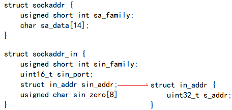

套接字就是网络进程的进程ID，和普通进程ID不同，网络进程的ID是由运行这个进程的计算机IP地址和这个进程使用的端口所组成
UDP
通信流程
服务端：
- 创建套接字，在内核中创建socket结构体，通过这个结构体使进程和网卡建立联系
- 为套接字绑定地址信息，在内核创建的socket结构体中描述地址和协议信息，客户端需要知道服务端的地址，所以服务端地址必须固定
- 接收数据，从socket的接收缓冲区中接收数据
- 发送数据，将数据放在socket的发送缓存区中，操作系统选择合适的时机封装发送数据
- 关闭套接字，释放资源
客户端：
- 创建套接字
- 为套接字绑定地址信息，客户端不推荐主动绑定地址信息，让操作系统选择合适的地址和端口绑定，降低端口冲突概率
- 发送数据
- 接收数据
- 关闭套接字
创建/关闭socket
int socket(int domain, int type, int protocol);int close(int fd);
domain: 地址域，确定本次通信协议版本的地址结构，AF_INET(IPV4网络协议)、AF_INET6(IPV6网络协议)、AF_UNIX(本地通信协议)
type: 套接字类型，SOCK_STREAM(数据流式套接字)SOCK_DGRAM(数据报式套接字)
protocol: 协议类型，0套接字类型默认协议，IPPROTO_TCP(6) IPPROTO_UDP(17)这些宏netinet/in.h中
成功返回文件描述符，失败返回-1，并设置错误码
绑定端口号(TCP/UDP服务器端)
int bind(int socket, const struct sockaddr *address, socklen_t address_len);
socket: socket函数返回的文件描述符
成功返回0，失败返回-1，并设置错误码
address&address_len: 由于各种网络协议的地址格式并不相同，如sockaddr_in(IPV4)、sockaddr_in6(IPV6)、sockaddr_un(UNIX Domain Socket)等，这些结构体大小不一定相同，所以需要传入地址大小。但是前16位都是地址类型，socket API使用的时候需要强制转化成struct sockaddr类型传入函数，函数内部通过前16位确定协议类型，用不同处理方式处理信息内容
以ipv4为例：

地址转换函数
我们通常用点分十进制的字符串表示IP地址，以下函数可以在字符串表示和in_addr表示之间转换
点分十进制字符串转uint32_t：in_addr_t inet_addr(const char *cp);int inet_aton(const char *cp, struct in_addr *inp);int inet_pton(int af, const char *src, void *dst); 兼容IPV6
uinit32_t转点分十进制字符串：char *inet_ntoa(struct in_addr in);const char *inet_ntop(int af, const void *src, char *dst, socklen_t size); 兼容IPV6
inet_ntoa函数，是把这个返回结果放到了静态存储区，不需要我们手动进行释放
但是连续调用两次会覆盖上一次的结果，不是线程安全的函数
多线程环境下，推荐使用inet_ntop
接收/发送数据
ssize_t recvfrom(int sockfd, void *buf, size_t len, int flags, struct sockaddr *src_addr, socklen_t *addrlen);
sockfd: socket操作句柄
buf: 用于接收从接收缓冲区取出的数据
len: 要接收的数据长度
flags: 默认为0，表示阻塞
src_addr: 用于接收发送方的地址信息
addrlen: 输入输出型参数，输入要获取的地址长度，输出实际获取的地址长度
成功返回实际接收到的数据字节长度，失败返回-1，并设置错误码ssize_t sendto(int sockfd, const void *buf, size_t len, int flags, const struct sockaddr *dest_addr, socklen_t addrlen);
sockfd: socket操作句柄
buf: 要往发送缓冲区发送的数据首地址
len: 要发送的数据长度
flags: 默认为0，表示阻塞
dest_addr: 接收方地址信息
addrlen: 地址信息长度
成功返回实际发送的数据字节长度，失败返回-1，并设置错误码
TCP
通信流程
服务端：
- 创建套接字，在内核中创建socket结构体，通过这个结构体使进程和网卡建立联
- 为套接字绑定地址信息，在内核创建的socket结构体中描述地址和协议信息，客户端需要知道服务端的地址，所以服务端地址必须固定
- 进入listen状态，等待客户端连接，内核中维护了两个队列：未完成连接队列和已完成连接队列，队列的最大容量就为backlog，队列满了则新连接请求将会被丢弃。当客户端创建套接字对服务器端的监听套接字发起连接请求，此时内核创建新套接字，用五元组唯一标识，放入半连接接队列，当三次握手完成后，则将这个新的套接字放入全连接队列中
- accept，从监听套接字的已完成连接队列中获取一个新套接字，通信由新的套接字完成
- 接收数据/发送数据，TCP协议提供全双工通信
- 关闭套接字，释放资源
客户端：
- 创建套接字
- 为套接字绑定地址信息，客户端不推荐主动绑定地址信息，让操作系统选择合适的地址和端口绑定，降低端口冲突概率
- connect向服务器发起连接请求
- 发送数据/接收数据
- 关闭套接字
int connect(int sockfd, const struct sockaddr *addr, socklen_t addrlen);
sockfd: socket操作句柄
addr: 对端地址
addrlen: 对端地址长度int listen(int sockfd, int backlog);
sockfd: 监听套接字句柄
backlog: 最大并发连接数
成功返回0，失败返回-1，并设置错误码int accept(int sockfd, struct sockaddr *addr, socklen_t *addrlen);
sockfd: 监听套接字句柄
addr: 输出型参数获取客户端地址
addrlen: 输入输出型参数，输入调用者提供的缓冲区addr的长度以避免缓冲区溢出，输出客户端地址结构体的实际长度
接收/发送数据
ssize_t recv(int sockfd, void *buf, size_t len, int flags);ssize_t send(int sockfd, const void *buf, size_t len, int flags);
由于tcp通信套接字中已经标识了五元组，因此不需要对方信息
recv没有数据阻塞，连接断开则返回0
send缓冲区满了则阻塞，连接断开触发SIGPIPE异常